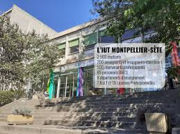

Mes Années Lycée
2021 - 2024 : Lycée Louis Rascol à Albi (81)
J'y ai obtenu mon Baccalauréat STMG avec mention bien.
J'ai choisi la spécialité Management.
C'est durant ces années que j'ai développé mon goût pour le commerce et le monde de l'entrepreneuriat.
Études Supérieures (IUT)

2024 - Présent : IUT Montpellier-Sète
Je suis actuellement en 2ème année de BUT Techniques de Commercialisation
avec l'option Business Développement et Management de la Relation Client.
Cette formation me permet d'acquérir des compétences solides en :
- Marketing et Stratégie de Communication
- Négociation et Vente
- Gestion de Projet et Droit Commercial
- Relation client